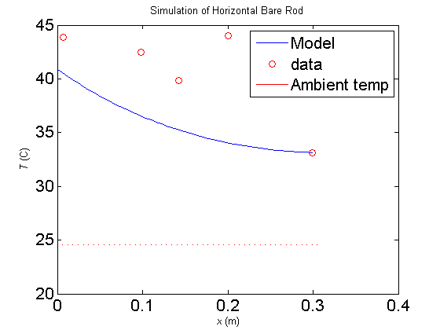
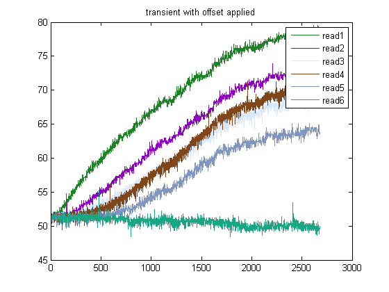
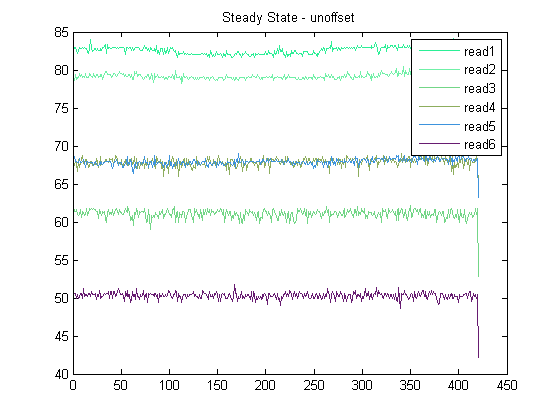
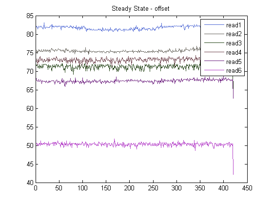
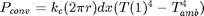
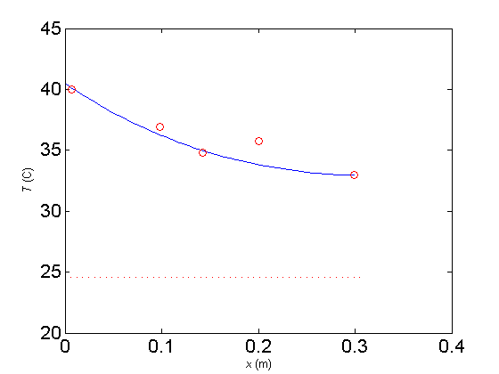

Horizontal Bare rod Steady State simulation
%2015.06.03 %ENPH 257 Lab - Group 13
clear all; close all; %Load the results (note: change this directory to your local one) load('C:\Users\James\Desktop\Robot\enph253-2015-team13\Lab\Bare_rod_test_June3\June3TransientSteadyState'); %load tmp sensor calibration file run offsetCalc.m;   
radius = 0.0111; %m length = 0.305; %m nstep = 50; dx = length/nstep;%m
%Thermo constants k = 200; %W / (m * K) - conduction k_air = 0.026; %W / (m^2 * K^4) - radiation sigma = 5.67e-8;%W / (m^2 * K^4) stefan-boltzman const emsv = 0.95; % emissivity fudge = 1.0; %fudge factor for convection alpha = 1.9e-5; %m^2/s kinematic viscosity of air g = 9.81; %m/s^2 kc = 12; %W / (m^2 * K) emsv_elec_tape = 0.95; width_tape = .020;%m, width of the electrical tape
%measurement points h5 = 0.006;%m, distance from endhole h4 = 0.105;%m, distance from endhole h3 = 0.163;%m, distance from endhole h2 = 0.207;%m, distance from endhole h1 = 0.298;%m, distance from endhole t1end = h1 + width_tape/2; t2st = h2 - width_tape/2; t2end = h2 + width_tape/2; t3st = h3 - width_tape/2; t3end = h3 + width_tape/2; t4st = h4 - width_tape/2; t4end = h4 - width_tape/2; t5st = h5 - width_tape/2;
readRang = 1:400; sensorData = 1:6; sensorDataC = 1:6; for i = 1:6 sensorData(i) = mean(readings(1,i,readRang)) + offset(i);%raw arduino input sensorDataC(i) = tmpConvert(sensorData(i));%C end sensorPos = [h1 h2 h3 h4 h5]; %from end hole x = 1:nstep;%just placeholder data T = 1:nstep;%just placeholder data Tamb = sensorDataC(6)+273;%K T(1) = sensorDataC(5)+273;%K
%End conditions
P_conv_end = kc * pi * radius^2 * (T(1) - Tamb);

P_conv_an = kc * 2 * pi * radius * dx * (T(1) - Tamb);%convection power loss for the annulus of the end of the rod
P_rad_end = sigma * emsv * pi * radius^2 *(T(1)^4 - Tamb^4);
P_rad_an = sigma * emsv_elec_tape * 2 * pi * radius * dx *(T(1)^4 - Tamb^4);
P_out = P_conv_end + P_conv_an + P_rad_end + P_rad_an;
P_in = P_out;
x(1) = dx;
for i = 2:nstep x(i) = i * dx; P_out = P_in; T(i) = T(i-1); %is the slice on the tape or not? if (x < t1end) | (x > t2st & x < t2end) | (x > t3st & x < t3end) | (x > t4st & x < t4end) | (x > t5st) P_conv = kc * 2 * pi * radius * dx *(T(i) - Tamb); P_rad = emsv_elec_tape * sigma * (2*pi*radius)*dx*(T(i)^4-Tamb^4); P_loss = P_conv + P_rad; else P_conv = kc * 2 * pi * radius * dx *(T(i) - Tamb); P_rad = emsv * sigma * (2*pi*radius)*dx*(T(i)^4-Tamb^4); P_loss = P_conv + P_rad; end P_in = P_out + P_loss; dT = P_in * dx/(k * pi * radius^2); T(i) = T(i) + dT; end
figure plot(length - x,T-273); hold on xlabel('{\it x} (m)') ylabel('{\it T} (C)') set(gca, 'FontSize', 16) set(gca, 'FontName', 'TimesRoman') plot(length - sensorPos,sensorDataC(1:5),'ro'); plot(x,Tamb-273,'r');